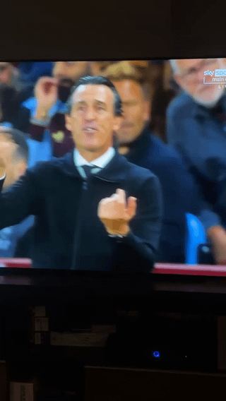
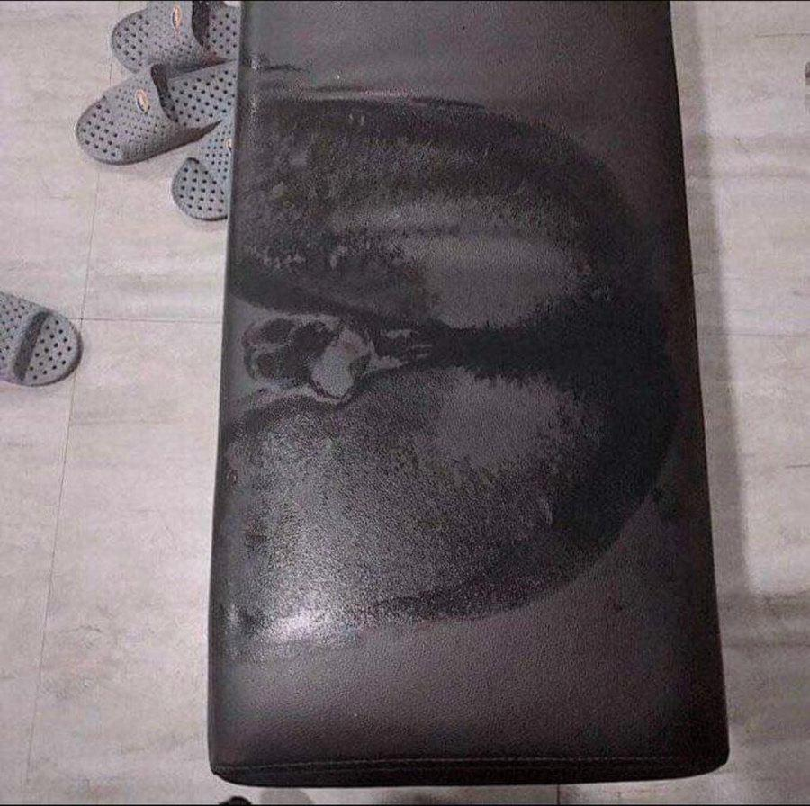
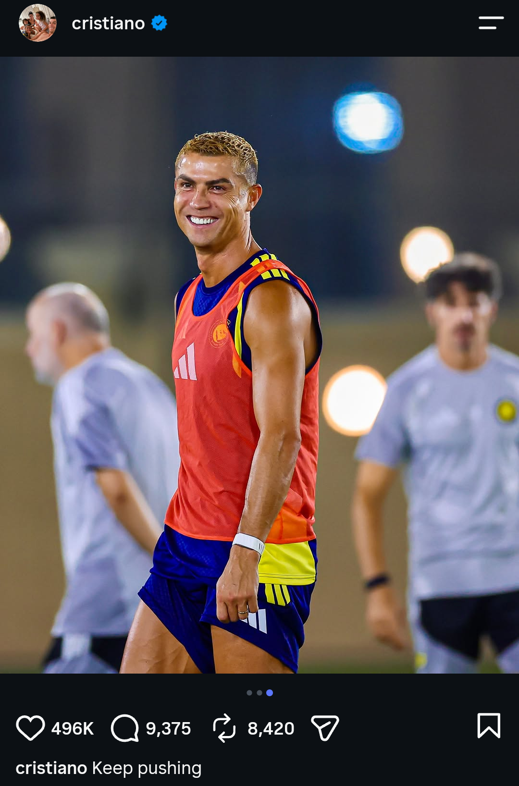
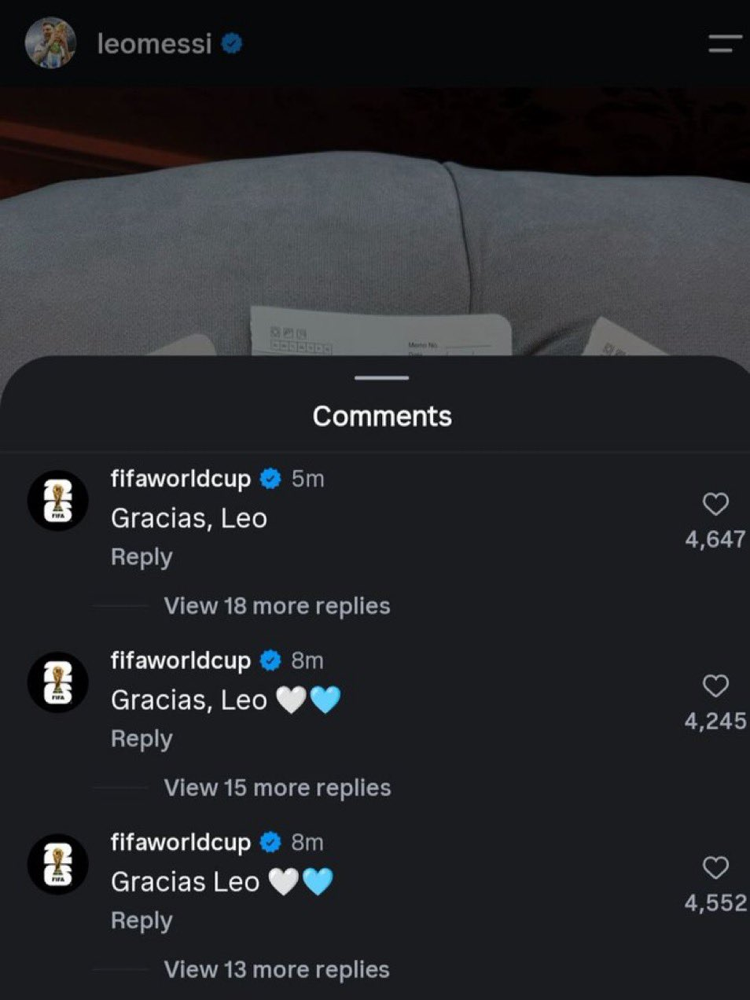
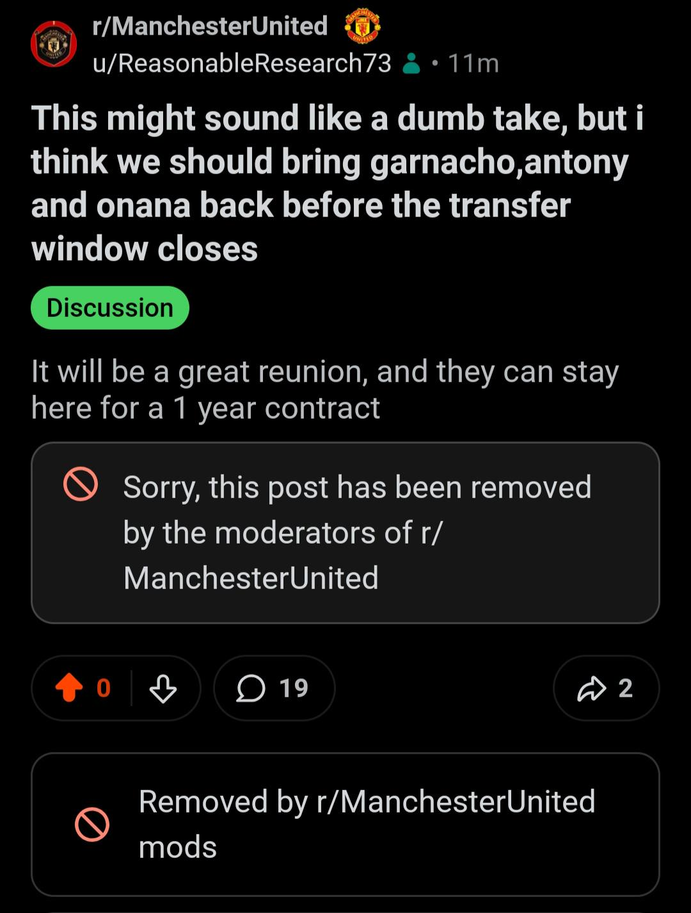
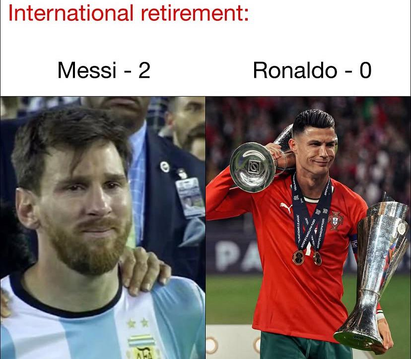
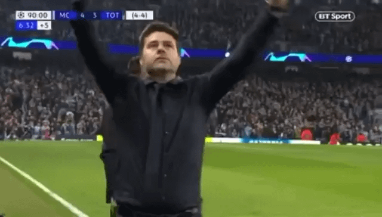
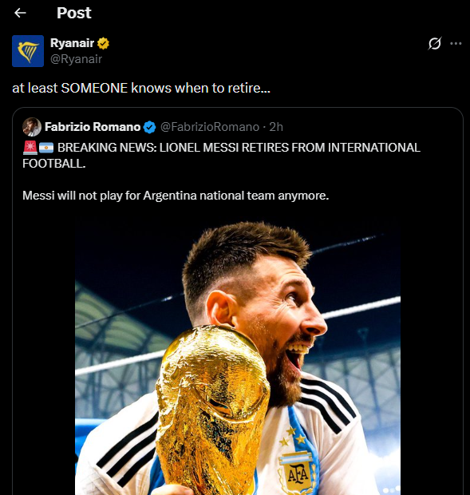
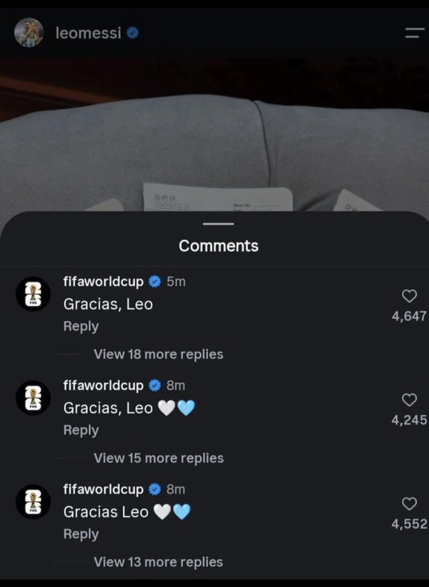
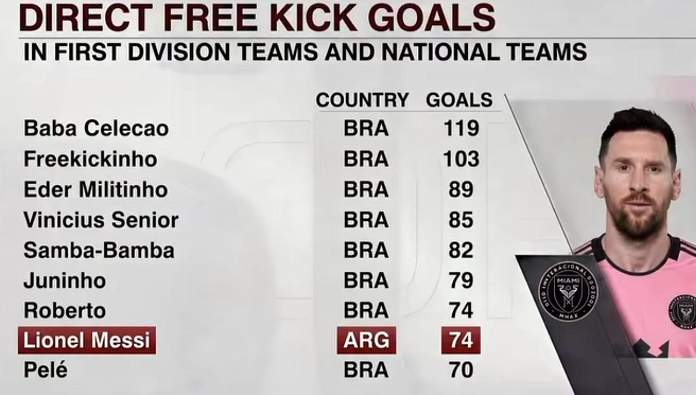

PITCHKEEP
Premier League ranks
The X
The X
Memes from X.
 Reddit
RedditReal Madrid’s starting lineup looking good
submitted by /u/WestCoastVybes [link] [comments]
 Reddit
RedditSpurs 2026 transfer window
submitted by /u/Time_Aerie6968 [link] [comments]
 Reddit
RedditTiktok ball knowledge needs to be studied 😭
submitted by /u/Principlalis [link] [comments]
 Reddit
RedditWhy have Liverpool signed a Rugby player, are they stupid?
submitted by /u/Soft-Jackfruit-102 [link] [comments]
 Reddit
RedditBurn in Atletico hell or move to Arsenal // Julian Alvarez:
submitted by /u/Chemical_Calendar_64 [link] [comments]
 Reddit
RedditHe's still a biggest entertainer in world football..
submitted by /u/L0lnator [link] [comments]
 Reddit
RedditPrajesh Lamashivan
What happed to this handsome young fella? Puberty hits hard in Spain... submitted by /u/shygirl2005x [link] [comments]
 Reddit
RedditStockholm syndrome is a psychological phenomenon where a captive or abuse victim develops an emotional bond, sympathy, or positive feelings toward their captor or abuser.
submitted by /u/Comfortable_End2921 [link] [comments]
 Reddit
Redditlegendary
submitted by /u/Little-Ad-6172 [link] [comments]
 Reddit
Reddit🍔 retired so the new generation can get a chance, meanwhile 🐪 in the 2030 WC after stealing his son's goal
Levels to this game submitted by /u/FM_highlights [link] [comments]
 Reddit
RedditThe unbeaten Premier League Giants after Matchday 2
submitted by /u/Ummagumma- [link] [comments]
 Reddit
RedditFavorite footballer who doesn't know when to stop?
submitted by /u/Singh_Aaditya [link] [comments]
 Reddit
RedditAnthony Gordon
submitted by /u/Srihari_stan [link] [comments]
 Reddit
RedditBro said BS7 😭
submitted by /u/tomsj2005 [link] [comments]
 Reddit
RedditThe WC Larpers have discovered club football
submitted by /u/PassionDiligent572 [link] [comments]
 Reddit
Redditthe most level-headed player in South America
submitted by /u/Chemical_Calendar_64 [link] [comments]
 Reddit
RedditThis sub after they find out Arsenal might win back to back PL while also playing good football.
submitted by /u/Concerned-Mann [link] [comments]
 Reddit
RedditDrop your streets WILL forget squads.
Believable players, the stoppable players in their primes. The squad striking confidence into the opposing team submitted by /u/Osamabinplot
 Reddit
RedditConnecting Cristiano to Lionel
submitted by /u/Both-Pay-9573 [link] [comments]
 Reddit
RedditEveryone cooked tonight 🤩❤️
submitted by /u/Chemical_Calendar_64 [link] [comments]
 Reddit
RedditBro has no idea how he's got there
submitted by /u/PressEnteR1990 [link] [comments]

RedditUnai Emery new fingering technic
submitted by /u/rickkyyyyyyyyy [link] [comments]

RedditViktor Gyokeres highlights against Aston Villa:
submitted by /u/Ummagumma- [link] [comments]
Reddit“Arsenal have won 1-0”
submitted by /u/Nololcows [link] [comments]

RedditLeo retires and 🐪 posts this with the caption "keep pushing". He is the real jerk🤣
What is bro pushing for at this point😝😝 submitted by /u/skullsmasher19 [link] [comments]

RedditWe get it bro
submitted by /u/AmbassadorPrimary902 [link] [comments]

RedditWhere is my freedom of speech
I got banned for voicing my opinion on r/manchesterunited submitted by /u/ReasonableResearch73 [link] [comments]

RedditWho’s the 🐐 now
submitted by /u/cottoncandyisgood_3 [link] [comments]
RedditGabriel Jesus when they told him that FC Barcelona wanted to sign him
submitted by /u/Chemical_Calendar_64 [link] [comments]

RedditArgentine players sitting crying because of Leo's retirement Portuguese players on Cristiano's retirement day
submitted by /u/Ok_Purple6651 [link] [comments]
RedditThank you Leo, and happy retirement
The greatest of all time submitted by /u/ReasonableResearch73 [link] [comments]

Redditoutjerked by ryanair
submitted by /u/Ok_Purple6651 [link] [comments]

RedditWhy do they said it 3 times 😭😭😭😭😭
submitted by /u/Sad-Comparison540 [link] [comments]
RedditBAN ALL THE MESSl APPRECIATION POSTS WE DONT GIVE A FUCK THIS IS A JERK SUB
TAKE YOUR SHIT TO ALL THE OTHER SUBREDDITS WE DONT DO STUPID APPRECIATION POSTS HERE IF YOURE GONNA MAKE AN APPRECIATION POST AT LEAST MAKE

RedditBest free kick specialists ever
My favourite is Freekickinho, how to forget his amazing goals! submitted by /u/Odd-Heron5704 [link] [comments]
 Reddit
RedditNot a jerk Thank you for being one of the greatest !
submitted by /u/Ok_Purple6651 [link] [comments]